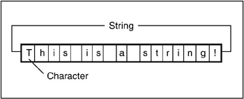
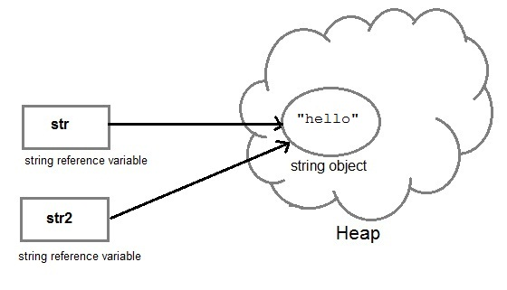
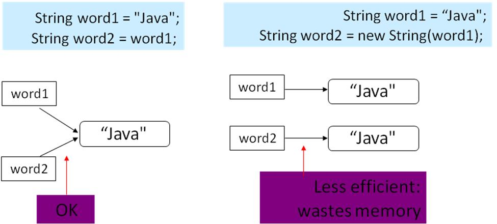

Created by <Academia de Código_>


Java is compiled into bytecode which is interpreted by the Java Virtual Machine (JVM).
Many computer programming languages are used to produce computer software that runs on the JVM
...and many more...

class HelloWorld {
public static void main(String[] args) {
System.out.println("Hello World!!");
}
}
variables and expressions have a type that is known at compile time
Reference Types that add functionality to existing primitives
// Byte, Short, Integer, Long, Float, Double, Character, Boolean
// Primitive type
int primitiveInt = 29;
// wraps the primitive types inside objects
// new is used to create a new object, similar to {} in javascript
Integer objectInt = new Integer("29");
// the wrapper classes provide added functionality
System.out.println("To Binary: " + Integer.toBinaryString(primitiveInt)); // "11101"
System.out.println("To String: " + objectInt.toString()); // "29"
int n1 = 100;
Integer n2 = new Integer(100);
When should we use it?
// assignment
int score = 200; // 200
// arithmetic operators
score = 100 + 5; // 105
score = 100 - 5; // 95
score = 100 * 5; // 500
score = 100 / 5; // 20
score = 100 % 3; // 1 - modulus operator (%): (100 = 33 * 3 + 1)
int score = 100;
// pre and post increment/decrement
int highScore = score++; // highScore = 100 and score = 101
highScore = score--; // highScore = 101 and score = 100
highScore = ++score; // highScore = 101 and score = 101
highScore = --score; // highScore = 100 and score = 100
// easy to insert Off-by-one type of bugs if not used on their own
score += 10; // 110 - a shorter version of score = score + 10
score -= 10; // 90
score *= 10; // 1000
score /= 10; // 10
// Usage of the ternary inside expression to replace if/else statement
int x = 10;
System.out.println((x % 2 == 0) ? "yes " + x : "no " + x);
x = 11;
System.out.println((x % 2 == 0) ? "yes " + x : "no " + x);
score > 99 // greater than
score < 56 // less than
score >= 76 // greater than or equal to
score <= 83 // less than or equal to
score == 45 // equals
score != 23 // not equal to
score > 99 && score < 150 // AND, returns true if all are true
score > 99 || score < 45 // OR, returns true if at least one is true
// absolute value
int i = -1;
System.out.println(Math.abs(i));
// round number
float f = 10.23f;
int ceil = (int) Math.ceil(f); // returns double
int floor = (int) Math.floor(f); // returns double
int round = Math.round(f); // returns int
System.out.println(ceil + " " + floor + " " + round);
// min and max
int number1 = 10;
int number2 = 15;
int min = Math.min(number1, number2);
int max = Math.max(number1, number2);
System.out.println(min + " " + max);
A String consists of a sequence of characters
A String in Java is an Object, we access it using a string reference:

// creating a String literal
String hello = "Hello World";
// creating a String using the constructor
String world = new String("Hello World");
Which one should we use?

// using literals
String a = "Java";
String b = "Java";
System.out.println(a == b); // True, it is the same object, GO WITH THIS ONE
// using the constructor
String c = new String("Java");
String d = new String("Java");
System.out.println(c == d); // False, they are different objects
// using literals
String a = "Java";
String b = "Java";
System.out.println(a.equals(b)); // True, they have the same content
// using the constructor
String c = new String("Java");
String d = new String("Java");
System.out.println(c.equals(d)); // True, they have the same content
String hello = "Hello ";
String world = "World!";
System.out.println(hello + world);
System.out.println(hello.concat(world));
System.out.println("hello".concat(world));
int age = 21;
String str1 = age + "";
String str2 = String.valueOf(age);
String str3 = Integer.toString(age);
String str = "Hello World!";
// returns the character at the specified index
char ch = str.charAt(6);
System.out.println(ch);
String str = "Hello World!";
// returns the "Hello" substring
String hello = str.substring(0, 5);
// returns the "World!" substring
String world = str.substring(6);
System.out.println(hello + " " + world);
String str = "Hello World!";
System.out.println(str.length());
Given a non-empty string and an int n, print a new string where the char at index n has been removed.
public static void main(String[] args) {
missingChar("Robocop", 3);
//receive command line argument if available
if(args.length>=2){
missingChar(args[0], Integer.parseInt(args[1]));
}
}
private static void missingChar(String str, int n) {
// print result here
}
Given a string, print a new string where "not " has been added to the front
However, if the string already begins with "not", print the string unchanged.
public static void main(String[] args) {
notString("semicolon");
notString("not semicolon");
//receive command line argument if available
if(args.length>0){
notString(args[0]);
}
}
private static void notString(String str) {
// print result here
}
Given a string, print a new string where the first and last characters have been exchanged.
public static void main(String[] args) {
frontBack("heisenberg");
//receive command line argument if available
if(args.length>0){
frontBack(args[0]);
}
}
private static void frontBack(String str) {
// print result here
}
String str = "Hello World!";
// what to search for, it can be a char or string
String search = "o";
// check if the string contains the search
if(str.contains(search)) {
System.out.println(search + " exists!");
}
// search forward from the beginning or a specified index
int index = str.indexOf(search); // ??
// search backwards from the end or a specified index
int lastIndex = str.lastIndexOf(search, str.length() - 2); // ??
// if the string does not contain the search expression, -1 is returned
System.out.println("The first " + search + " is at " + index +
" and the last one at " + lastIndex);
String str = "Hello World!";
// what to replace and for what
String target = "Hello";
String replacement = "Goodbye";
// create a new string with the provided replacement (strings are immutable)
str = str.replace(target, replacement);
// replace only the first occurrence
str = str.replaceFirst("o", "U");
System.out.println(str);
// Replace all digits with letter X
str = str.replaceAll("[0-9]", "X");
// Replace all occurrences of multiple spaces with one single space
str = str.replaceAll(" {2,}", " ");
String str = "Academia de Codigo";
String[] words = str.split(" "); // str.split(" ", 2) to limit the array length
// words = ["Academia", "de", "Codigo"]
// prints the first element of the array
System.out.println(words[0]);
String str = "http://www.academiadecodigo.org";
String domain = ""; // www.academiadecodigo.org
String name = ""; // < Academia de Codigo_ >
// print the following message at the end
// I am a Code Cadet at < Academia de Codigo_ >, www.academiadecodigo.org

An array is a container object that holds
a fixed number of values of a single type
// The length of an array is established when the array is created.
// After creation, its length is fixed.
String[] contacts = new String[4];
// declare an array with values
String[] contacts = { "John", "Mary", "Ze" };
String[] contacts = new String[4];
// assign a value to one element of the array
contacts[0] = "Ze";
// retrieve the value of one element
String ze = contacts[0];
// declare an array with values
String[] contacts = { "John", "Mary", "Ze" };
// print the length
System.out.println(contacts.length);
Find the two neighbouring numbers in an array with the smallest difference to each other
public static void main(String[] args) {
int[] myArray = {0, 5, 1209, 6, 2, 111, 112, 33};
int[] result = findClosest(myArray);
// print the elements of the resulting array
}
private static int[] findClosest(int[] numbers) {
// hint: remember Math.abs();
}
Control flow statements, break up the flow of execution by employing decision making, looping, and branching, enabling your program to conditionally execute particular blocks of code.
int bullets = 7;
if(bullets > 0) {
System.out.println("Shoot");
}
int bullets = 7;
if(bullets > 0) {
System.out.println("Shoot");
} else {
System.out.println("Reload");
}
Multiple Conditions
// score
int score = 95;
// player ranking
if(score > 0) {
System.out.println("NOOB!");
} else if (score > 30) {
System.out.println("Not bad…");
} else if (score > 60) {
System.out.println("That was good.");
} else if (score > 90) {
System.out.println("Awesome!");
}
This is the wrong way to do it!
The order matters!
// score
int score = 95;
// player ranking
if(score > 90) {
System.out.println("Awesome!");
} else if (score > 60) {
System.out.println("That was good");
} else if (score > 30) {
System.out.println("Not bad…");
} else {
System.out.println("NOOB!");
}
// weapons: 0 - Sword 1 - Gun 2 - Grenade
int currentWeapon = 0;
switch(currentWeapon) {
case 0:
System.out.println("Attack!");
break;
case 1:
System.out.println("Shoot!");
break;
case 2:
System.out.println("Throw!");
break;
default:
System.out.println("Get a weapon…");
break;
}
String[] contacts = { "John", "Mary", "Jean", "Paul" };
for(int i = 0; i < contacts.length; i++) {
// print each contact
System.out.println(contacts[i]);
}
String[] contacts = { "John", "Mary", "Jean", "Paul"};
for (String contact : contacts) {
// print each contact
System.out.println(contact);
}
// bullet count
int bullets = 100;
while (bullets > 0) {
// shoot the weapon
bullets--;
}
Be aware of infinite loops!
// weapons: 0 - Sword 1 - Gun 2 - Grenade
int currentWeapon = 0;
switch(currentWeapon) {
case 0:
System.out.println("Attack!");
break;
case 1:
System.out.println("Gun!");
break;
case 2:
System.out.println("Throw!");
break;
default:
System.out.println("Get a weapon…");
break;
}
String[] droids = { "M-TD", "C3PO", "R2-D2", "RA-7" };
// we are looking for R2-D2
for(int i = 0; i < droids.length; i++) {
if(droids[i].equals("R2-D2")) {
// do something with it and jump out of the loop
System.out.println("This is the droid I was looking for...");
break;
}
System.out.println("Still looking...");
}
String[] droids = { "M-TD", "C3PO", "R2-D2", "RA-7" };
// looking for R2-D2 and C3PO
for(int i = 0; i < droids.length; i++) {
if(!droids[i].equals("R2-D2") && !droids[i].equals("C3PO")) {
// just skip the iteration
System.out.println("This is not the droid I'm looking for...");
continue;
}
// do something with the droid
System.out.println("Found " + droids[i]);
}
Should I do all of these manually?
The IDE may help you, but it's still mostly a manual process
A set of programming tools for writing applications, all activated from a common user interface and menus.
Let's work with our HelloWorld example in the IDE!
but first, some information regarding packagesThe process of software design is largely a process of organizing
Packages, together with object oriented design, will help you to organize your code, they are used for:
The Java Archive (JAR) file format enables you to bundle multiple files into a single archive file containing the class files and auxiliary resources associated with the application.
To perform basic tasks with JAR files, you use the Java Archive Tool provided as part of the JDK
A JAR file is a zip archive containing a manifest file and potentially signature files
JAR files can be executed directly on OSX, Linux and Microsoft operating systems
The manifest is a special file that contains information about the files packaged in a JAR file. You can use the manifest for:

Ant uses an xml file to store it's configuration, which is typically named build.xml
Simplifies exchange of data between software agents
Meta-Language and a technology for creating markup languages
A Task is the smallest unit of work in ant
A Target represents a phase in the project build cycle and is a collection of zero or more tasks
<!-- hello is an Ant project -->
<project name="HelloWorld" >
<!-- message is an Ant target -->
<target name="message">
<!-- echo is an Ant task -->
<echo message="Hello, World"/>
</target>
</project>